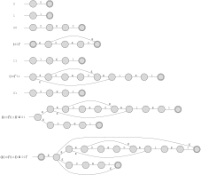
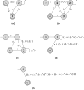

Reminder about browser check – you should see “OK” in script here: \({\mathcal O}{\mathcal K}\)
(Textbook, Exercise 1.20 b and e) [How to “grade” your work: There are lots of correct answers to these questions, and some of the simpler examples are below. I would grade this out of 8 points, with 1 point for each answer. The answer is either right or wrong – no way for partial credit here. ]
(Part b)
Members: \(\texttt{ab}\) and \(\texttt{abab}\)
Not members: \(\texttt{a}\) and \(\texttt{aabb}\)
(Part e)
Members: \(\texttt{aba}\) and \(\texttt{aaba}\)
Not members: \(\texttt{a}\) and \(\texttt{bab}\)
(Textbook, Exercise 1.19b) [How to “grade” your work: These solutions should give each step of the construction, as shown below (and was done in Examples 1.56 and 1.57 in the book). There are 9 steps/components shown below, so give one point for each, and one additional point for general form/legibility of the presentation. For each step, for full credit it must be exactly as shown below. Can take off 1/2 point for minor mistakes that don’t affect what the NFA accepts, like a missing epsilon transition in the “00” NFA. Otherwise, check all transitions and final states to make sure they are correct. ]

(Textbook, Exercise 1.21b) [How to “grade” your work: Each step needs to be shown. To grade this out of 12 points, do the following: writing as an initial GNFA is worth 3 points (diagram (b)), checking epsilon transitions and changes in accept states; each of the three transformations after that is worth 3 points, with 1.5 points per path-to-regular expression replacement (each has two paths). You should make sure appropriate parentheses are added to respect precedence of operators in the regular expressions. Note that this is not the only order in which you could remove states, so different orders could result in different final answers. ]
The sequence of transformations below starts with the DFA from the problem in diagram (a), and conversion to an initial GNFA (with new start and accept states) is in diagram (b). In diagram (c) we have removed state 2, noting that there are two paths through state 2 that we need to replace: 1->2->3, and 3->2->3. Diagram (d) shows the elimination of state 3 and the two paths through state 3 – note that the path 1->3->a gets joined (with a union) with the existing path/epsilon transition from 1 to a. And finally, diagram (e) eliminates state 1, leaving just the start and accept states. The final answer (the regular expression for this DFA) is given in diagram (e).

(Textbook, Exercise 1.46a) [How to “grade” your work: Grade out of 10 points. Proofs using the pumping lemma are highly-structured and always have the following pieces/structure: the initial “assumption for the sake of contradiction” statement (1 point), the definition of \(p\) from the pumping lemma (1 point), selection/definition of \(s\) (2 points: must be in terms of \(p\) and must be in \(L\)). Then each of the three conditions in the pumping lemma must be mentioned and used (1 point for \(|xy|\leq p\), 1 point for \(|y|>0\), and most importantly, 3 points for the pumping condition (\(xy^iz\)) and reasoning about the contradiction with this condition. Finally, 1 more point for the wrap-up and conclusion. Note that errors can build up: if an incorrect string \(s\) is chosen, there’s really no way the reasoning about the contradiction can be correct. ]
Claim: \(L=\{\texttt{0}^n\texttt{1}^m \texttt{0}^n\,|\, m,n\geq 0\}\) is not regular.
Proof: Assume for the sake of contradiction that \(L\) is regular. Let \(p\) be the pumping length given by the pumping lemma, and let \(s\) be the string \(\texttt{0}^p\texttt{1}\texttt{0}^p\). Since \(s\) is a member of \(L\) with length more than \(p\), the pumping lemma guarantees that \(s\) can be split into three pieces, \(s=xyz\), where for any \(i\geq 0\) the string \(xy^iz\) is in \(L\) and the pieces satisfy the other two conditions of the pumping lemma. In particular, we know that \(|xy|\leq p\), and since the first \(p\) symbols in \(s\) are \(\texttt{0}\)s we know that \(x\) and \(y\) can only contain \(\texttt{0}\)s. \(z\) must then contain the lone \(\texttt{1}\) and the following \(p\) \(\texttt{0}\)s (it may contain some zeroes before the \(\texttt{1}\) as well). Furthermore, since \(|y|>0\) we know that \(y\) contains at least one \(\texttt{0}\).
When we pump \(xyz\) to get \(xy^2z\), since \(y\) contains at least one \(\texttt{0}\) we have increased the number of \(\texttt{0}\)s before the \(\texttt{1}\) in the string, while the number of \(\texttt{0}\)s after the \(\texttt{1}\) is unchanged. Therefore, the number of \(\texttt{0}\)s before the \(\texttt{1}\) is larger than the number of \(\texttt{0}\)s after the \(\texttt{1}\) in the pumped string, so \(xy^2z\) is not in \(L\). This contradicts the pumping lemma, so our original assumption – that \(L\) is regular – must be false. Therefore, \(L\) is not regular. QED